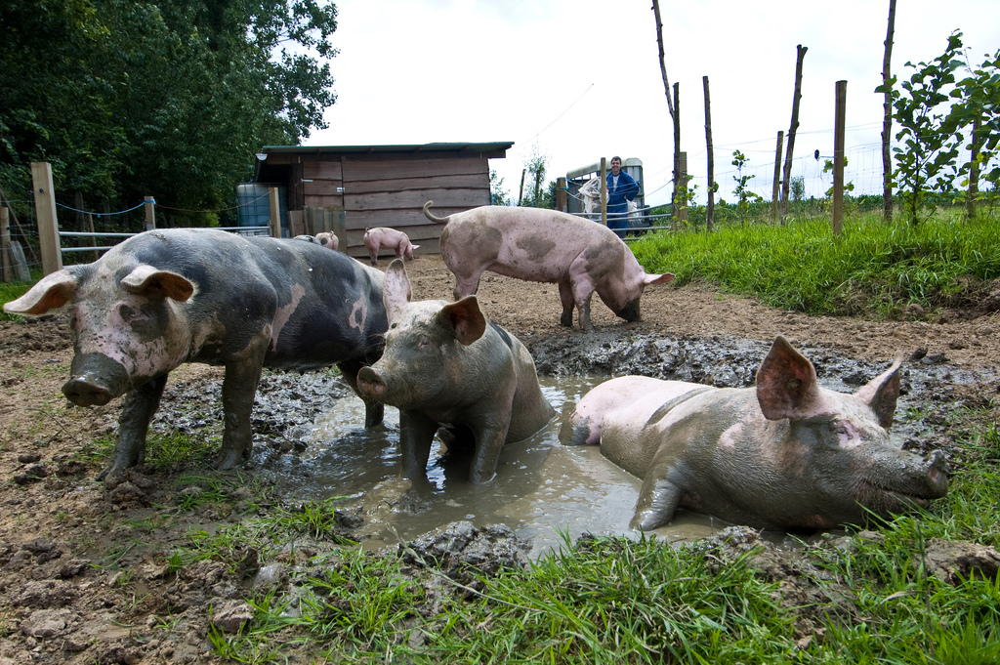

Saturday, December the 10th, 2011
back to: title, date or indexes
It's pig time, at last, in the Hooting Yard Advent Calendar. Here is a picture of pigs doing what pigs do best. And let us not forget that if you gaze at these pigs for an hour or so, any mental or emotional turmoil buffeting your brain will be becalmed, for as we know, the contemplation of pigs in a pig sty is greatly soothing to the frantic.

The snap is from the Animal Photos! website. I like the breezy gusto of that exclamation mark. Perhaps I should rename this site Hooting Yard!